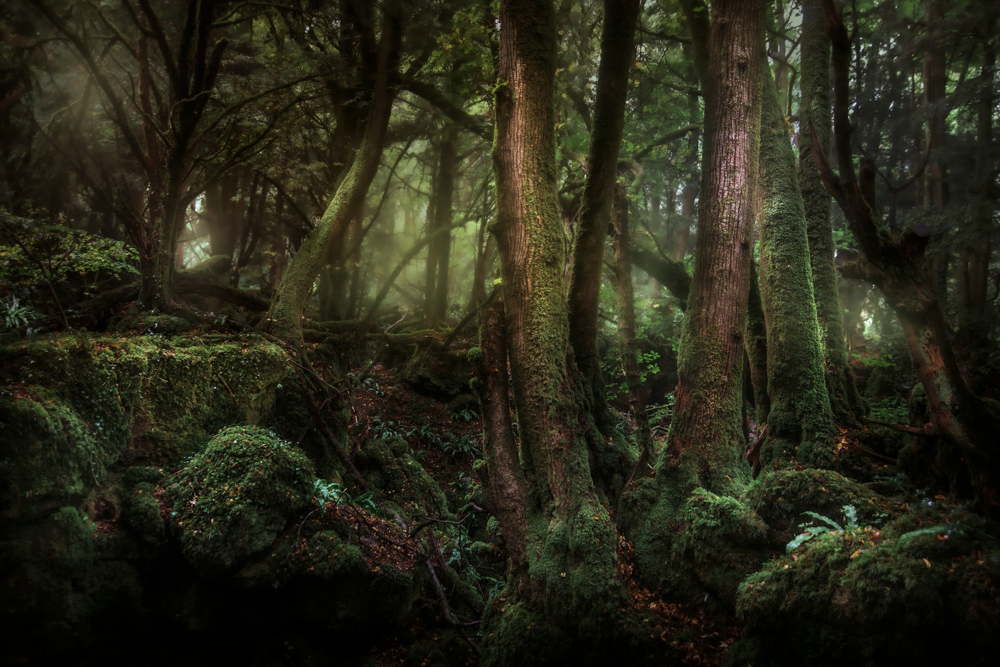

01
Escala de mundo aberto

World building • Roblox
Floresta viva: mundo aberto com atmosfera densa
Do blockout à composição final: caminhos, pontos de interesse, silhuetas e ritmo visual que orientam o jogador sem quebrar a imersão. Substitua esta imagem pelo screenshot final do projeto.
Environment Art • Map Design